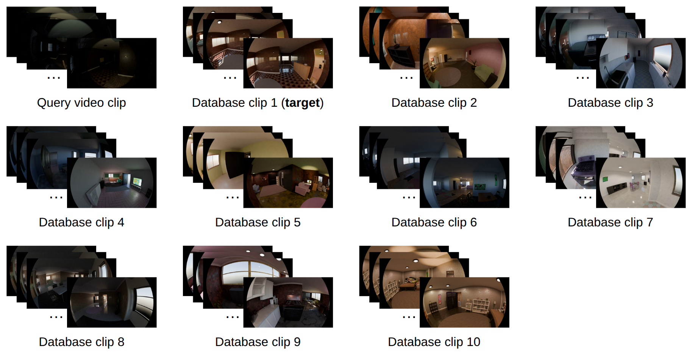

Abstract
Most existing benchmarks for understanding egocentric vision focus primarily on daytime scenarios, overlooking the low-light conditions that are inevitable in real-world applications. To investigate this gap, we present EgoNight, the first comprehensive benchmark for nighttime egocentric vision, with visual question answering (VQA) as the core task.
A key feature of EgoNight is the introduction of day–night aligned videos, which enhance night annotation quality using the daytime data and reveal clear performance gaps between lighting conditions. We collect both synthetic videos rendered by Blender and real-world recordings, ensuring scenes and actions are visually and temporally aligned.
EgoNight-VQA contains 3,658 QA pairs across 90 videos, spanning 12 diverse QA types, with more than 300 hours of human work. Evaluations of state-of-the-art MLLMs reveal substantial performance drops when transferring from day to night.
Dataset
EgoNight comprises three subsets with day–night aligned videos:
EgoNight-Sofia
Real-world indoor/outdoor egocentric recordings
EgoNight-Oxford
Day and night driving sequences from Oxford
EgoNight-Synthetic
Blender-rendered synthetic scenes with Infinigen
Data Collection Pipeline
Day–night aligned data collection pipeline.
QA Examples
EgoNight-Sofia
EgoNight-Synthetic

More synthetic day–night examples.
Benchmark & Question Types
EgoNight-VQA covers 12 question types for fine-grained evaluation:
- Object Recognition
- Spatial Reasoning
- Scene Sequence
- Non Common
- Counting
- Navigation
- Text Recognition
- Action
Beyond VQA, EgoNight introduces two auxiliary tasks:
- Day–night correspondence retrieval
- Egocentric depth estimation at night
Main Pipeline
Depth Estimation Examples

Day–night correspondence retrieval qualitative results.
Results
State-of-the-art MLLMs show substantial performance drops when transferring from day to night, underscoring the challenges of reasoning under low-light conditions.
Day–Night Performance Gap
Statistics
Download
EgoNight is available on Hugging Face:
Download from Hugging FaceCitation
@inproceedings{zhang2026egonight,
title={EgoNight: Towards Egocentric Vision Understanding at Night with a Challenging Benchmark},
author={Zhang, Deheng and Fu, Yuqian and Yang, Runyi and Miao, Yang and Qian, Tianwen and Zheng, Xu and Sun, Guolei and Chhatkuli, Ajad and Huang, Xuanjing and Jiang, Yu-Gang and Van Gool, Luc and Paudel, Danda Pani},
booktitle={International Conference on Learning Representations (ICLR)},
year={2026},
url={https://openreview.net/forum?id=DKD4QbOKBN}
}Contact
For questions and collaboration, please reach out:
yuqian.fu.ai@gmail.com
Corresponding author